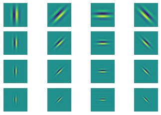
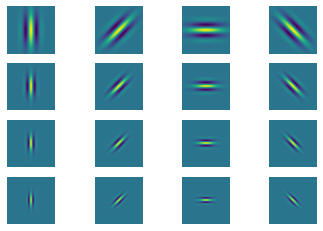

Lecture 3: Scale Space, Image Pyramids and Filter Banks Code
Contents

Lecture 3: Scale Space, Image Pyramids and Filter Banks Code ¶
#@title
from ipywidgets import widgets
out1 = widgets.Output()
with out1:
from IPython.display import YouTubeVideo
video = YouTubeVideo(id=f"f4mL4Thr9hc", width=854, height=480, fs=1, rel=0)
print("Video available at https://youtube.com/watch?v=" + video.id)
display(video)
display(out1)
#@title
from IPython import display as IPyDisplay
IPyDisplay.HTML(
f"""
<div>
<a href= "https://github.com/DL4CV-NPTEL/Deep-Learning-For-Computer-Vision/blob/main/Slides/Week_2/DL4CV_Week02_Part03.pdf" target="_blank">
<img src="https://github.com/DL4CV-NPTEL/Deep-Learning-For-Computer-Vision/blob/main/Data/Slides_Logo.png?raw=1"
alt="button link to Airtable" style="width:200px"></a>
</div>""" )
GENERATE SINUSOID STIMULI¶
I(x) = A*\(\cos\)(wx+p)
import matplotlib.pyplot as plt
from matplotlib.pyplot import imshow
import numpy as np
import warnings
warnings.filterwarnings("ignore")
def Generate_Sinusoid(size_of_image, A, omega, rho):
"""
Generating sinusoid grating
A : amplitude
rho : phase
omega : frequency
size_of_image : (height, width)
"""
radius = (int(size_of_image[0]/2.0), int(size_of_image[1]/2.0))
[x, y] = np.meshgrid(range(-radius[0], radius[0]+1), range(-radius[1], radius[1]+1))
I = A * np.cos(omega[0] * x + omega[1] * y + rho)
return I
theta = np.pi/4
omega = [np.cos(theta), np.sin(theta)]
sinusoidParam = {'A':1, 'omega':omega, 'rho':np.pi/2, 'size_of_image':(32,32)}
imshow(Generate_Sinusoid(**sinusoidParam), cmap='gray')
# ** is a special syntax in python, which enables passing a key-value dictionary as parameter
<matplotlib.image.AxesImage at 0x27f41f14e88>
Generate-gabor-filter¶
A general type of Gabor filter[1] can be defined:
$\( g(x,y;\lambda,\theta,\psi,\sigma,\gamma) = \exp\left(-\frac{x'^2+\gamma^2y'^2}{2\sigma^2}\right)\exp\left(i\left(2\pi\frac{x'}{\lambda}+\psi\right)\right) \)$
[1] https://en.wikipedia.org/wiki/Gabor_filter
Here we implement a type of Gabor filter which satisfies the neurophysiological constraints for simple cells:
$\( \psi (x; \omega, \theta, K) = \left[\frac{\omega^2}{ 4 \pi K^2} \exp \{-(\omega^2/8K^2)[4(x\cdot(cos\theta, sin\theta))^2 + (x \cdot ( -sin \theta, cos \theta))^2]\} \right] \times \left[ \exp \{ iwx \cdot (cos\theta, sin\theta) \} exp(K^2/2) \right] \)$
def genGabor(size_of_image, omega, theta, func=np.cos, K=np.pi):
radius = (int(size_of_image[0]/2.0), int(size_of_image[1]/2.0))
[x, y] = np.meshgrid(range(-radius[0], radius[0]+1), range(-radius[1], radius[1]+1))
x1 = x * np.cos(theta) + y * np.sin(theta)
y1 = -x * np.sin(theta) + y * np.cos(theta)
gauss = omega**2 / (4*np.pi * K**2) * np.exp(- omega**2 / (8*K**2) * ( 4 * x1**2 + y1**2))
sinusoid = func(omega * x1) * np.exp(K**2 / 2)
gabor = gauss * sinusoid
return gabor
g = genGabor((256,256), 0.3, np.pi/4, func=np.cos)
# change func to "cos", "sin" can generate sin gabor or cos gabor, here we pass a function name as a parameter
imshow(g, cmap='gray')
np.mean(g)
1.5140274644582015e-05
Generate gabor filter bank¶
theta = np.arange(0, np.pi, np.pi/4) # range of theta
omega = np.arange(0.2, 0.6, 0.1) # range of omega
params = [(t,o) for o in omega for t in theta]
sinFilterBank = []
cosFilterBank = []
gaborParams = []
for (theta, omega) in params:
gaborParam = {'omega':omega, 'theta':theta, 'size_of_image':(128, 128)}
sinGabor = genGabor(func=np.sin, **gaborParam)
cosGabor = genGabor(func=np.cos, **gaborParam)
sinFilterBank.append(sinGabor)
cosFilterBank.append(cosGabor)
gaborParams.append(gaborParam)
plt.figure()
n = len(sinFilterBank)
for i in range(n):
plt.subplot(4,4,i+1)
# title(r'$\theta$={theta:.2f}$\omega$={omega}'.format(**gaborParams[i]))
plt.axis('off'); plt.imshow(sinFilterBank[i])
plt.figure()
for i in range(n):
plt.subplot(4,4,i+1)
# title(r'$\theta$={theta:.2f}$\omega$={omega}'.format(**gaborParams[i]))
plt.axis('off'); plt.imshow(cosFilterBank[i])


Below is an example using scipy reference (2)¶
import matplotlib.pyplot as plt
import numpy as np
from scipy import ndimage as ndi
from skimage import data
from skimage.util import img_as_float
from skimage.filters import gabor_kernel
def compute_feats(image, kernels):
feats = np.zeros((len(kernels), 2), dtype=np.double)
for k, kernel in enumerate(kernels):
filtered = ndi.convolve(image, kernel, mode='wrap')
feats[k, 0] = filtered.mean()
feats[k, 1] = filtered.var()
return feats
def match(feats, ref_feats):
min_error = np.inf
min_i = None
for i in range(ref_feats.shape[0]):
error = np.sum((feats - ref_feats[i, :])**2)
if error < min_error:
min_error = error
min_i = i
return min_i
# prepare filter bank kernels
kernels = []
for theta in range(4):
theta = theta / 4. * np.pi
for sigma in (1, 3):
for frequency in (0.05, 0.25):
kernel = np.real(gabor_kernel(frequency, theta=theta,
sigma_x=sigma, sigma_y=sigma))
kernels.append(kernel)
shrink = (slice(0, None, 3), slice(0, None, 3))
brick = img_as_float(data.brick())[shrink]
grass = img_as_float(data.grass())[shrink]
gravel = img_as_float(data.gravel())[shrink]
image_names = ('brick', 'grass', 'gravel')
images = (brick, grass, gravel)
# prepare reference features
ref_feats = np.zeros((3, len(kernels), 2), dtype=np.double)
ref_feats[0, :, :] = compute_feats(brick, kernels)
ref_feats[1, :, :] = compute_feats(grass, kernels)
ref_feats[2, :, :] = compute_feats(gravel, kernels)
print('Rotated images matched against references using Gabor filter banks:')
print('original: brick, rotated: 30deg, match result: ', end='')
feats = compute_feats(ndi.rotate(brick, angle=190, reshape=False), kernels)
print(image_names[match(feats, ref_feats)])
print('original: brick, rotated: 70deg, match result: ', end='')
feats = compute_feats(ndi.rotate(brick, angle=70, reshape=False), kernels)
print(image_names[match(feats, ref_feats)])
print('original: grass, rotated: 145deg, match result: ', end='')
feats = compute_feats(ndi.rotate(grass, angle=145, reshape=False), kernels)
print(image_names[match(feats, ref_feats)])
def power(image, kernel):
# Normalize images for better comparison.
image = (image - image.mean()) / image.std()
return np.sqrt(ndi.convolve(image, np.real(kernel), mode='wrap')**2 +
ndi.convolve(image, np.imag(kernel), mode='wrap')**2)
# Plot a selection of the filter bank kernels and their responses.
results = []
kernel_params = []
for theta in (0, 1):
theta = theta / 4. * np.pi
for frequency in (0.1, 0.4):
kernel = gabor_kernel(frequency, theta=theta)
params = 'theta=%d,\nfrequency=%.2f' % (theta * 180 / np.pi, frequency)
kernel_params.append(params)
# Save kernel and the power image for each image
results.append((kernel, [power(img, kernel) for img in images]))
fig, axes = plt.subplots(nrows=5, ncols=4, figsize=(5, 6))
plt.gray()
fig.suptitle('Image responses for Gabor filter kernels', fontsize=12)
axes[0][0].axis('off')
# Plot original images
for label, img, ax in zip(image_names, images, axes[0][1:]):
ax.imshow(img)
ax.set_title(label, fontsize=9)
ax.axis('off')
for label, (kernel, powers), ax_row in zip(kernel_params, results, axes[1:]):
# Plot Gabor kernel
ax = ax_row[0]
ax.imshow(np.real(kernel))
ax.set_ylabel(label, fontsize=7)
ax.set_xticks([])
ax.set_yticks([])
# Plot Gabor responses with the contrast normalized for each filter
vmin = np.min(powers)
vmax = np.max(powers)
for patch, ax in zip(powers, ax_row[1:]):
ax.imshow(patch, vmin=vmin, vmax=vmax)
ax.axis('off')
plt.show()
Rotated images matched against references using Gabor filter banks:
original: brick, rotated: 30deg, match result:
brick
original: brick, rotated: 70deg, match result:
brick
original: grass, rotated: 145deg, match result:
brick